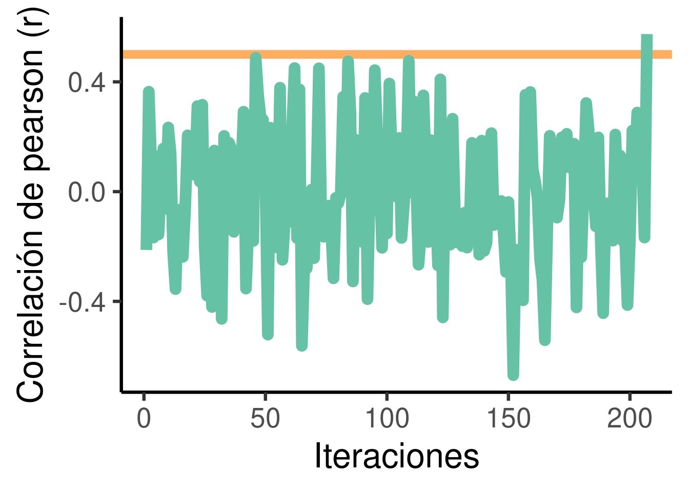
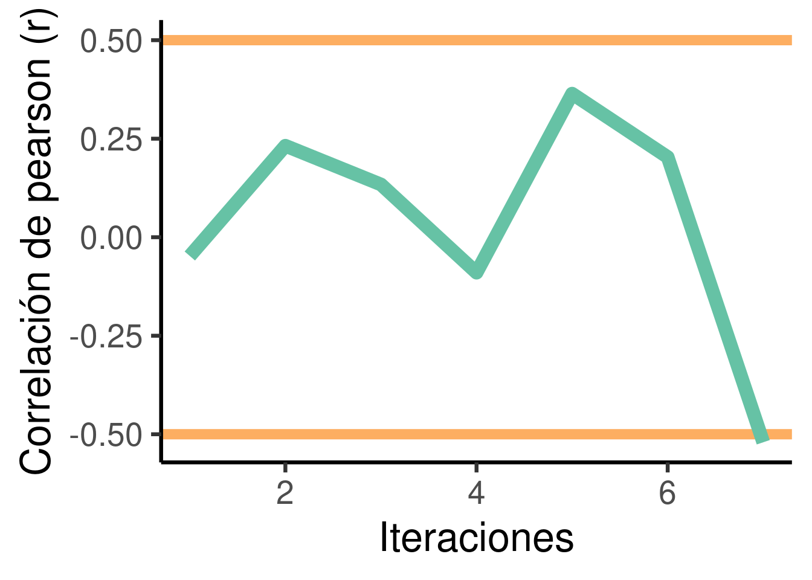

Bucles
Objetivos del manual
- Aprender a procesar de forma serial operaciones que deben repetirse sobre diferentes objetos
- Familiarizarse con el uso de bucles en la plataforma R
- Tener una noción general de los opciones disponibles en R para construir bucles
Primero debemos preparar los archivos de ejemplo:
Código
# definir directorio a donde guardar los archivos
directorio <- "DIRECCION_DONDE_GUARDAR_LOS ARCHIVOS_DE_EJEMPLO"
# guardar archivos
download.file(
url = paste0(
"https://github.com/maRce10/ucr_r_avanzado/",
"raw/master/additional_files/datos_camara_submarina.zip"
),
destfile = file.path(directorio, "datos_camara_submarina.zip")
)
# extraerlos del zip
unzip(
zipfile = file.path(directorio, "datos_camara_submarina.zip"),
exdir = directorio
)
# hacer vector con nombre y direccion de archivos
archivos_txt <-
list.files(
path = directorio,
full.names = TRUE,
pattern = "TXT$"
)
También pueden bajar el archivo directamente de este enlance. Recuerde extraer los archivos y hacer el vector con los nombres de los archivos (correr lineas de la 9 a la 13).
Si todo salió bien el vector “archivos_txt” deberia tener 19 elementos:
1 Bucles (loops)
- Proceso automatizado de varios pasos organizado como secuencias de acciones (p. Ej., procesos ‘por lotes’)
- Se usa para acelerar los procedimientos en los que se aplica la misma acción a muchos objetos (similares)
- Crítico para la gestión de grandes bases de datos (‘big data’, y buenas prácticas de programación)
2 tipos básicos:
- Ejecutar para un número predefinido de iteraciones (es decir, tiempos). Estos se subdividen en dos clases:
- Los resultados pueden ingresarse nuevamente en la siguiente iteración (bucles
for) - Los resultados de una interacción no pueden afectar a otras iteraciones (
(X)apply)
- Los resultados pueden ingresarse nuevamente en la siguiente iteración (bucles

* Modificado de Tutorial de bucles Datacamp
- Ejecutar hasta que se cumpla una condición predefinida (bucles
whileyrepeat)

2 Bucles ‘for’
Por mucho, for es el bucle más popular. Se caracteriza por que el número de iteraciones se puede determinar de antemano y las iteraciones pueden tomar en cuenta resultados de iteraciones anteriores:

El bucle for se inicia con el operador for. A este se le da un vector (sensu lato: lista o vector atómico) sobre el cual repetir una tarea. La tarea se encuentra en el cuerpo del bucle:
Código
[1] 1
[1] 4
[1] 9
Note que en dentro de los paréntesis del operador for se usa el operador in. Este denota el nombre de objeto que se usará en el cuerpo del bucle para asignar los velores del vector. El bucle devuelve 3 valores, uno para cada valor en vctr.
Una forma mas clara de demostrar como el bucle repite la acción de forma serial sobre cada elemento del vector es añadiendo pausas entre iteraciones. La función Sys.sleep() pausa el código de R por el número de segundos que se le defina:
Código
[1] "# corriendo iteración 1"
[1] 1
[1] "# corriendo iteración 2"
[1] 4
[1] "# corriendo iteración 3"
[1] 9
En este caso vemos como el bucle toma una pausa entre cada iteración y luego hace el cálculo (cuando corre el código en su computadora).
Si deseamos guardar el resultado de las operaciones debemos añadirlo a un vector vacío. Para hacer esto hay 2 opciones:
- Usando la función
append() - Agregar nuevos elementos a un vector usando indexación
El siguiente código guarda los resultados usando append():
Código
[1] 1 4 9Note que append() se usa dentro del cuerpo del bucle luego de hacer los cálculos.
Así podemos guardar los resultados usando indexación:
Código
[1] 1 4 9Estos bucles se pueden correr sobre cualquier vector. Por ejemplo podemos evaluar para el juego de datos iris el promedio del largo del sépalo para cada especie de esta forma:
Código
# vector sobre el cual iterar el bucle
vctr <- unique(iris$Species)
# vector vacio
resultados <- vector()
# inicio del bucle
for (i in vctr) {
# cuerpo del bucle
i2 <- max(iris$Sepal.Length[iris$Species == i])
# guardar resultados en vector vacio
resultados <- append(resultados, i2)
}
# añadir nombre de especies
names(resultados) <- vctr
resultados setosa versicolor virginica
5.8 7.0 7.9
2.1 Aplicación al manejo de datos
Usaremos los datos de ejemplo que bajamos al inicio del manual para demostrar la utilidad del los bucles en el manejo de datos. Estos datos muestran la salida de un programa de identificación automática de especies marinas en videos pasivos tomados en la columna de agua. Para cada video analizado el programa genera un archivo de texto (.TXT) con una fila para cada especie detectada mas una serie de metadatos asociados a la detección. Los datos se ven así:

Recordemos que los nombres de los archivos .TXT están guardados en un vector llamado archivos_txt. Podemos leer el primer archivo (i.e. el primer elemento en archivos_txt) de la siguiente forma:
Código
| Filename | Frame | Time..mins. | Period | Period.time..mins. | OpCode | TapeReader | Depth |
|---|---|---|---|---|---|---|---|
| GH018767_LcamT3.MP4 | 11451 | 3.1840 | inicio | 1.5504 | R3-LcamT3-RcamN4_Pelada1_2021-09-24 | Andres | 10 |
| GH018767_LcamT3.MP4 | 25005 | 6.9528 | inicio | 5.3192 | R3-LcamT3-RcamN4_Pelada1_2021-09-24 | Andres | 10 |
| GH028767_LcamT3.MP4 | 30464 | 24.5201 | inicio | 22.8865 | R3-LcamT3-RcamN4_Pelada1_2021-09-24 | Andres | 10 |
| GH018767_LcamT3.MP4 | 26911 | 7.4828 | inicio | 5.8492 | R3-LcamT3-RcamN4_Pelada1_2021-09-24 | Andres | 10 |
Podemos saber cuantas especies se observaron en ese muestreo simplemente calculado el número de filas en archivo:
Ahora, para hacer esto con todos los archivos no es eficiente leer cada uno en su propia linea de código y luego calcular el número de filas. Al fin de cuentas, todos los códigos serian muy parecidos, solo cambiaría el nombre del archivo. Es en estos casos que los bucles son de gran utilidad. En este ejemplo solo debemos incorporar el código de lectura del archivo y del cálculo del número de filas en el cuerpo del bucle, usando el nombre de los archivos (archivos_txt) como el vector sobre el cual iterar el bucle:
Código
[1] 39 1 2 12 14 9 12 8 32 36 21 12 22 27 29 19 8 12 26
Podemos ordenar estos resultados fácilmente haciendo un cuadro de datos (data.frame). Para esto creamos una columna con el nombre del archivo y otra con el resultado del número de filas:
Código
| archivo | filas |
|---|---|
| 2022-09-02_R3-LcamT3-RcamN4_Pel1_2021-09-24_MaxN.TXT | 39 |
| 2022-09-03_S6-LB13-RB12_PuntaMariaOeste_2022-03-24_MaxN.TXT | 1 |
| 2022-09-03_T4-LB19-RB18_PuntaMariaOeste_2022-03-24_MaxN.TXT | 2 |
| 2022-09-04_S1-LB10-RN9_Arco2_2022-07-15_MaxN.TXT | 12 |
| 2022-09-07_P1-LB12-RB13_Gissler_2022-03-30_MaxN.TXT | 14 |
| 2022-09-11_P1-LB14-RB13_Risco_2022-03-26_MaxN.TXT | 9 |
Ejercicio 1
Podemos calcular el número de familias observadas para el primer archivo que leímos (archivo1) de esta forma:
1.1 Haga un bucle for que devuelva el número de familias para cada archivo
1.2 Cree un cuadro de datos (data frame) que contenga dos columnas, una para el nombre del archivo y otra para el número de familias
1.3 Añada una columna al cuadro de datos creado en el ejercicio anterior indicando la fecha de creación del video (esta información se encuentra en la columna ‘Date’ de cada archivo de texto). Note que cada archivo contiene solamente una fecha. Debe usar un bucle for para extraer esta información de los archivos.
1.4 Añada una columna al cuadro de datos creado en el ejercicio 1.2 (y modificado en 1.3) indicando la profundidad a la que se grabó el video. Debe usar un bucle for para extraer esta información de los archivos.
Puede usar el siguiente código para convertir profundidad a un vector numérico:
1.5 ¿Cuál es la correlación entre el número de especies observadas (que es igual al número de filas) y la profundidad? (pista: cor.test())
1.6 ¿Cuál es la correlación entre el número de familias y la profundidad?
El bucle for también puede ser usado para juntar todas los datos de los archivos de texto en un solo cuadro de datos. Esto lo podemos hacer “rellenando” un cuadro de datos vacío, de forma análoga a como rellenamos un vector vació anteriormente:
Código
[1] TRUE3 Bucles ‘(X)apply’
(X)apply se refiere en realidad a una familia de funciones que toman una función como entrada y la aplican a una secuencia de objetos (vectores sensu lato). Por lo tanto hay varias funciones (X)apply en R:
[1] "apply" "dendrapply" "eapply" "kernapply" "lapply"
[6] "mapply" "rapply" "sapply" "tapply" "vapply"
Sin embargo, las más utilizadas son apply,sapply, lapply ytapply. Todos siguen la misma lógica:

lapply toma un vector (atómico o de lista), aplica una función a cada elemento y devuelve una lista:
sapply también toma un vector (atómico o de lista) y aplica la función a cada elemento, sin embargo, el resultado es un vector atómico (si es que se puede empaquetar como un vector):
apply aplica una función a cada una de las filas o columnas de un objeto bidimensional. Por ejemplo, el siguiente código calcula el promedio para largo y ancho de sépalo en el juego de datos iris:
Código
Sepal.Length Sepal.Width
5.8433 3.0573
Note que el argumento ‘MARGIN’ indica si el calculo se lleva a cabo a nivel de filas (MARGIN = 1) o columnas (MARGIN = 2).
tapply es más específico ya que aplica una función a un subconjunto de datos definido por un vector categórico adicional. Por ejemplo, podemos calcular la longitud promedio de pétalo para cada especie en el juego de datos ‘iris’ de la siguiente manera:
setosa versicolor virginica
1.462 4.260 5.552
Los bucles (X)apply pueden modificarse para realizar acciones personalizadas creando nuevas funciones (ya sea dentro o fuera del bucle):
Código
[[1]]
[1] 39
[[2]]
[1] 1
[[3]]
[1] 2
[[4]]
[1] 12
[[5]]
[1] 14
[[6]]
[1] 9
Note que el resultado es una lista. Si deseamos generar un vector podemos usar el bucle sapply:
./data//2022-09-02_R3-LcamT3-RcamN4_Pel1_2021-09-24_MaxN.TXT
39
./data//2022-09-03_S6-LB13-RB12_PuntaMariaOeste_2022-03-24_MaxN.TXT
1
./data//2022-09-03_T4-LB19-RB18_PuntaMariaOeste_2022-03-24_MaxN.TXT
2
./data//2022-09-04_S1-LB10-RN9_Arco2_2022-07-15_MaxN.TXT
12
./data//2022-09-07_P1-LB12-RB13_Gissler_2022-03-30_MaxN.TXT
14
./data//2022-09-11_P1-LB14-RB13_Risco_2022-03-26_MaxN.TXT
9
Podemos usar funciones anónimas (i.e. funciones que se crean dentro del llamado del bucle) así:
Código
./data//2022-09-02_R3-LcamT3-RcamN4_Pel1_2021-09-24_MaxN.TXT
39
./data//2022-09-03_S6-LB13-RB12_PuntaMariaOeste_2022-03-24_MaxN.TXT
1
./data//2022-09-03_T4-LB19-RB18_PuntaMariaOeste_2022-03-24_MaxN.TXT
2
./data//2022-09-04_S1-LB10-RN9_Arco2_2022-07-15_MaxN.TXT
12
./data//2022-09-07_P1-LB12-RB13_Gissler_2022-03-30_MaxN.TXT
14
./data//2022-09-11_P1-LB14-RB13_Risco_2022-03-26_MaxN.TXT
9
Tenga en cuenta que:
en este tipo de bucles no hay retroalimentación de las iteraciones anteriores (es decir, los resultados de una iteración no se pueden ingresar en las iteraciones posteriores)
(X)applyes más limpio que otros bucles porque los objetos creados dentro de ellos no están disponibles en el entorno de trabajo actual.
3.1 bucles replicate
El bucle replicate también pertenece a la familia de los (X)apply (a pesar de su nombre), ya que toma una función y la replica. Sin embargo solo replica una acción (generalmente aleatoria) y el usuario no tiene control sobre el insumo a la función. El argumento ‘n’ define cuantas veces se replica la acción y ‘expr’ define la acción a realizar:
[,1] [,2] [,3]
[1,] -0.75919 2.123379 0.35639
[2,] -1.94534 -1.478239 -2.51877
[3,] -0.28177 1.127031 -0.70940
[4,] 0.10823 -1.027990 -1.44061
[5,] -0.33134 0.153722 0.21577
[6,] 1.00456 -0.994653 -1.46813
[7,] 0.30925 0.352210 1.42555
[8,] -1.72841 -0.413025 0.55576
[9,] 0.54653 0.642674 -1.11939
[10,] 2.03375 -0.089979 0.54550
Note que los resultados son agrupados en una matrix. ‘expr’ también puede replicar código que no ha sido “empaquetado en una función”.
Ejercicio 2
2.1 Haga un bucle lapply equivalente al bucle for en el ejercicio 1.1.
2.2 Haga un bucle sapply equivalente al bucle for en el ejercicio 1.1 y ponga el resultado en un cuadro de datos, similiar a lo hecho en el ejercicio 1.2
2.3 Haga un bucle sapply que permita añadir al cuadro de datos creado en el ejercicio anterior el total de individuos observados en un muestreo (pista: sumatoria de la columna ‘MaxN’).
2.4 Haga un bucle tapply para calcular el error estandar para el ancho de sépalo por especie en el juego de datos ‘iris’.
4 Bucles ‘repeat’
Los bucles repeat deben cumplir una condición para detenerse. Típicamente el bucle lleva a cabo la acción al menos una vez, independientemente de la evaluación de la condición:

El siguiente bucle repeat se ejecuta hasta que la correlación de las variables continuas generadas al azar es mayor que un umbral:
Código
# crear vector vacio
cc_vector <- NULL
repeat{
# generar la variable 1
v1 <- rnorm(n = 20, mean = 100, sd = 20)
# generar la variable 2
v2 <- rnorm(n = 20, mean = 100, sd = 20)
# correr la correlacion
corr_coef <- cor(v1, v2)
# guardar resultados
cc_vector[length(cc_vector) + 1] <- corr_coef
# parar si se cumple la condicion
if (corr_coef > 0.5) break
}
head(cc_vector)[1] -0.21762 -0.16681 -0.34826 0.16664 -0.22393 0.34355
Podemos graficarlo el resultado asi así:
Código

La condición determina si el ciclo debe detenerse.
Una característica importante de los bucles while,repeat y for es que pueden tomar resultados de iteraciones anteriores como entrada en iteraciones posteriores. Esto se debe a que los objetos creados dentro de la función se guardan en el entorno actual (a diferencia de los bucles Xapply).
5 Bucles ‘While’
Los bucles while aplican una acción en una secuencia de elementos hasta que se cumpla una condición. Son muy parecidos a los bucles repeat. La condición puede evaluar un resultado del propio bucle o una entrada externa:

Código
# definir valor inicial
corr_coef <- 0
# iniciar bucle
while (corr_coef < 0.5) {
# generar la variable 1
v1 <- rnorm(n = 20, mean = 100, sd = 20)
# generar la variable 2
v2 <- rnorm(n = 20, mean = 100, sd = 20)
# corrrer la correlacion
corr_coef <- cor(v1, v2)
# imprimir
print(corr_coef)
}
corr_coef [1] 0.0872575 0.3865472 0.1199017 -0.2902941 0.2413406 -0.1667497
[7] 0.1272541 0.0011283 -0.1344395 -0.0184824 0.5966901
Con un pequeño ajuste, un bucle while también puede evaluar varias condiciones a la vez. Por ejemplo, también podemos incluir altos valores de correlación negativa:
Código
# definir valor inicial
corr_coef <- 0
# crear vector vacio
cc_vector <- NULL
while (corr_coef < 0.5 & corr_coef > -0.5) {
# generar la variable 1
v1 <- rnorm(n = 20, mean = 100, sd = 20)
# generar la variable 2
v2 <- rnorm(n = 20, mean = 100, sd = 20)
# correr correlacion
corr_coef <- cor(v1, v2)
# guardar resultados
cc_vector[length(cc_vector) + 1] <- corr_coef
}
head(cc_vector)[1] -0.047693 0.232015 0.133767 -0.089900 0.364152 0.203306
Ejercicio 3
3.1 Haga un bucle while que se detenga si la correlación es superior a 0.8 o si el bucle ha estado ejecutándose durante más de 10 segundos (consejo: use la funcióndifftime y/o as.numeric)
3.2 Haga un bucle repeat que se detenga solo si la correlación es mayor que 0.5 pero menor que 0.55
5.1 Referencias
Session information
R version 4.2.2 Patched (2022-11-10 r83330)
Platform: x86_64-pc-linux-gnu (64-bit)
Running under: Ubuntu 20.04.5 LTS
Matrix products: default
BLAS: /usr/lib/x86_64-linux-gnu/blas/libblas.so.3.9.0
LAPACK: /usr/lib/x86_64-linux-gnu/lapack/liblapack.so.3.9.0
locale:
[1] LC_CTYPE=es_ES.UTF-8 LC_NUMERIC=C
[3] LC_TIME=es_CR.UTF-8 LC_COLLATE=es_ES.UTF-8
[5] LC_MONETARY=es_CR.UTF-8 LC_MESSAGES=es_ES.UTF-8
[7] LC_PAPER=es_CR.UTF-8 LC_NAME=C
[9] LC_ADDRESS=C LC_TELEPHONE=C
[11] LC_MEASUREMENT=es_CR.UTF-8 LC_IDENTIFICATION=C
attached base packages:
[1] stats graphics grDevices utils datasets methods base
other attached packages:
[1] RColorBrewer_1.1-3 ggplot2_3.4.3
loaded via a namespace (and not attached):
[1] rstudioapi_0.14 knitr_1.42 magrittr_2.0.3 tidyselect_1.2.0
[5] munsell_0.5.0 colorspace_2.1-0 R6_2.5.1 rlang_1.1.1
[9] fastmap_1.1.1 fansi_1.0.4 dplyr_1.1.0 tools_4.2.2
[13] grid_4.2.2 gtable_0.3.4 xfun_0.40 utf8_1.2.3
[17] cli_3.6.1 withr_2.5.0 htmltools_0.5.6 yaml_2.3.7
[21] digest_0.6.33 tibble_3.2.1 lifecycle_1.0.3 farver_2.1.1
[25] htmlwidgets_1.5.4 vctrs_0.6.3 glue_1.6.2 evaluate_0.21
[29] rmarkdown_2.21 labeling_0.4.3 compiler_4.2.2 pillar_1.9.0
[33] generics_0.1.3 scales_1.2.1 jsonlite_1.8.7 pkgconfig_2.0.3